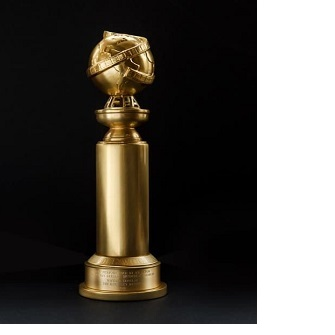
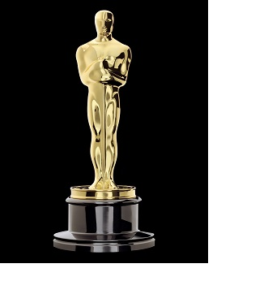
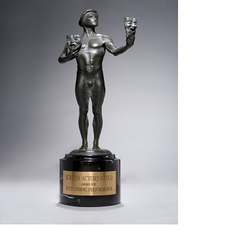
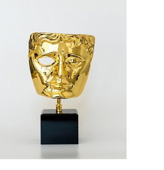

Il successo del film è stato immenso. Costato 25 milioni di dollari, ne ha incassati 236 milioni. Il diritto di contare ha ricevuto, tra le più importanti, 3 nomination agli Oscar 2017: Miglior film, Miglior attrice non protagonista a Octavia Spencer e Migliore sceneggiatura non originale. Tra i numerosi premi vinti, spicca il Sag Awards vinto come Miglior cast. Ma vediamo tutti i vari premi e le varie nominations di questo film.
|  | GOLDEN GLOBE 2017
Ha ricevuto 2 nomination ai Golden Globe 2017:
|
|  | OSCAR 2017
Ha ricevuto 3 nomination agli Oscar 2017:
|
|  |
SAG AWARDS 2017
Ha ricevuto 1 nomination ai SAG Awards 2017 e vinto 1 premio
NOMINATION
|
|  |
BAFTA 2017
Ha ricevuto 1 nomination ai BAFTA 2017
|